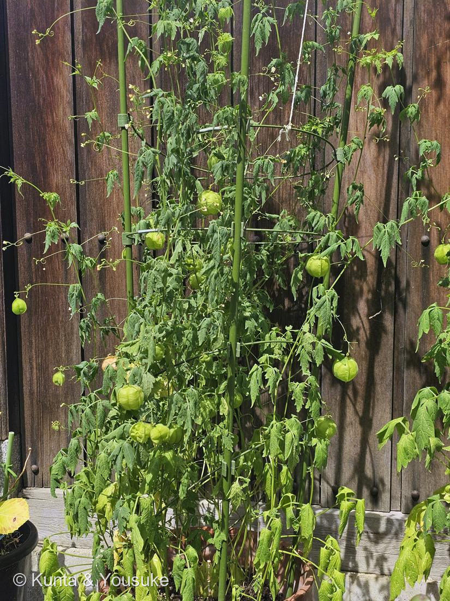

地図を読み込んでいるよ…
🔍 写真も地図も、押しているあいだ拡大して見られるよ（スマホは指を置いてすこし待ってね）。
🌍 の地図＝この子がもともと自生している場所を緑に。熱帯・亜熱帯に広く（汎熱帯）。日本には園芸・帰化。
⭐「広い」ことじたいが、この子の情報。汎熱帯＝熱帯・亜熱帯にぐるりと広く。日本には園芸・帰化で来たよ。
⚠ 地図は国（日本と中国だけ県・省）までしか塗れないから、ほんとうの分布より広く見えていることがあるよ。地図はだいたいの場所。正確なところは、上の文を見てね。
フウセンカズラ（風船葛）
Cardiospermum halicacabum L.
英名 · balloon vine（風船のつる）／love-in-a-puff（ふくらみの中の、愛）
ムクロジ科 · Sapindaceae（フウセンカズラ属）
燻太さんの問い「なんでこんな形なのかな」「もっと大きな風船をつける植物もいた気がする」
名前と学名の由来 ── 名前が、答えを先に言っている
- Cardiospermum＝ギリシャ語 kardia（心臓）＋sperma（種）＝「心臓の種」。風船の中の黒い種には、まっしろなハート形の模様がある。属名は、その模様のこと。
- halicacabum＝ギリシャ語で「袋のような（ホオズキ状の）」植物を指した古名から。風船のこと。
- 英名 balloon vine（風船のつる）／love-in-a-puff（ふくらみの中の、愛）＝ハートの種が風船に入っているから。和名風船葛も、そのまんま。日本語も英語もギリシャ語も、みんな同じところを見ている。
- ムクロジ科＝ライチ・ランブータン・ムクロジ・カエデと同じ科。この風船つるは、カエデの親戚。
問い①「なんでこんな形なのかな」
- 正直に言うと、決着はついていない。有力な説がいくつもあって、そのどれもがもっともらしい。
- まず風船の正体＝蒴果（さくか）。3つの部屋に分かれた果実で、種はたった3つ。あとはほとんど空洞。
- ① 水に浮く（水散布）——この植物は熱帯じゅうに広く分布している。風船は水に浮く。流されて広がったと考えると、分布の広さが説明しやすい。
- ② 風で飛ぶ・転がる（風散布）——軽くて空気を抱えているので、乾くと風に飛ばされ、地面を転がる。
- ③ 食べられにくくする——大きく見えるのに、中身は種が3つだけ。かじっても割に合わない。空洞はクッションにもなる。
- ④ 緑の風船が光合成する——果皮が緑なのは、中の種を育てるエネルギーを、果実自身が作っているから。
- ぼくの見立て：どれか一つが正解なのではなく、ぜんぶ少しずつ本当。「風船」というひとつの形が、運ぶ・守る・育てるを同時にこなしている。
問い②「もっと大きな風船をつける植物もいた気がする」
- その記憶、正しい。しかも——大きい風船ほど、正体がちがう。
- 小 · フウセンカズラ（この子／ムクロジ科）＝風船の正体は果実（蒴果）。2〜3cm。
- 中 · ホオズキ（ナス科）＝オレンジの提灯。でもあれは果実ではない。萼（がく）が花のあとで巨大にふくらんで、実を包みこんだもの。4〜5cm。植物学では ICS（Inflated Calyx Syndrome＝萼膨張症候群）と呼ばれ、MADS-box 遺伝子 MPF2 が鍵を握ることが知られている。萼を巨大化させる遺伝子スイッチが見つかっている。（He & Saedler 2005, PNAS）
- 大 · フウセントウワタ（風船唐綿／キョウチクトウ科）＝とげの生えた大きな風船。6〜8cm。割ると綿毛のついた種がびっしり。切り花でも出回る。燻太さんの記憶にあるのは、たぶんこの子。
⭐そのフウセントウワタと同じ科（キョウチクトウ科ガガイモ亜科）の子が、図鑑に来た——No.045 ブルースター。ブルースターの果実も「細長い袋」で、割れると綿毛の種が飛ぶ。フウセントウワタのとげとげの風船は、あれのふくらんだ版。 - → 同じ「風船」に見えて、果実・萼・果実。出どころがちがい、科もばらばら。これも収れん（024／027／029／030に続く）。
- → そして ホオズキ＝萼は、No.029 コエビソウから続く「見た目と正体がちがう」連作の仲間。だから、おまけはホオズキにした。探しに行こう。
この植物のこと
- つる性の一年草。巻きひげでよじ登る。この巻きひげは花序の枝が変化したもの（葉が変化したエンドウの巻きひげとは、出どころがちがう）。
- 花はとても小さくて白い（3〜4mm）。風船の派手さにくらべて、驚くほど地味。写真にも小さく写っている。
- グリーンカーテンの定番。燻太さんが「緑のカーテンみたい」と言ったのは、まさにこの子の得意技。
- 秋、風船は紙のように茶色く枯れて、中からハートの模様の黒い種が出てくる。種を見るなら秋。
- 伝統医学では、かゆみ・湿疹に使われてきた。ヨーロッパには Cardiospermum エキス入りの外用クリームがある。